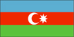
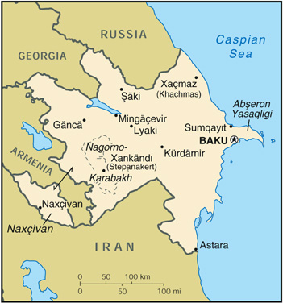

{kind=link}


| Azerbaijan |  |
|
|
 | |
| Introduction |
Background: Azerbaijan - a nation of Turkic Muslims - has been an independent republic since the collapse of the Soviet Union in 1991. Despite a cease-fire, in place since 1994, Azerbaijan has yet to resolve its conflict with Armenia over the Azerbaijani Nagorno-Karabakh enclave (largely Armenian populated). Azerbaijan has lost almost 20% of its territory and must support some 750,000 refugees as a result of the conflict. Corruption is ubiquitous and the promise of wealth from Azerbaijan's undeveloped petroleum resources remains largely unfulfilled.
| Geography |
Location: Southwestern Asia, bordering the Caspian Sea, between Iran and Russia
Geographic coordinates: 40 30 N, 47 30 E
Map references: Commonwealth of Independent States
Area:
total:
86,600 sq km
land:
86,100 sq km
water:
500 sq km
note:
includes the exclave of Naxcivan Autonomous Republic and the Nagorno-Karabakh region; the region's autonomy was abolished by Azerbaijani Supreme Soviet on 26 November 1991
Area - comparative: slightly smaller than Maine
Land boundaries:
total:
2,013 km
border countries:
Armenia (with Azerbaijan-proper) 566 km, Armenia (with Azerbaijan-Naxcivan exclave) 221 km, Georgia 322 km, Iran (with Azerbaijan-proper) 432 km, Iran (with Azerbaijan-Naxcivan exclave) 179 km, Russia 284 km, Turkey 9 km
Coastline:
0 km (landlocked)
note:
Azerbaijan borders the Caspian Sea (800 km, est.)
Maritime claims: none (landlocked)
Climate: dry, semiarid steppe
Terrain: large, flat Kur-Araz Ovaligi (Kura-Araks Lowland) (much of it below sea level) with Great Caucasus Mountains to the north, Qarabag Yaylasi (Karabakh Upland) in west; Baku lies on Abseron Yasaqligi (Apsheron Peninsula) that juts into Caspian Sea
Elevation extremes:
lowest point:
Caspian Sea -28 m
highest point:
Bazarduzu Dagi 4,485 m
Natural resources: petroleum, natural gas, iron ore, nonferrous metals, alumina
Land use:
arable land:
18%
permanent crops:
5%
permanent pastures:
25%
forests and woodland:
11%
other:
41% (1993 est.)
Irrigated land: 10,000 sq km (1993 est.)
Natural hazards: droughts; some lowland areas threatened by rising levels of the Caspian Sea
Environment - current issues: local scientists consider the Abseron Yasaqligi (Apsheron Peninsula) (including Baku and Sumqayit) and the Caspian Sea to be the ecologically most devastated area in the world because of severe air, water, and soil pollution; soil pollution results from the use of DDT as a pesticide and also from toxic defoliants used in the production of cotton
Environment - international agreements:
party to:
Climate Change, Desertification, Endangered Species, Marine Dumping, Ozone Layer Protection
signed, but not ratified:
Biodiversity
Geography - note: landlocked
| People |
Population: 7,748,163 (July 2000 est.)
Age structure:
0-14 years:
30% (male 1,172,944; female 1,127,624)
15-64 years:
63% (male 2,388,737; female 2,525,797)
65 years and over:
7% (male 210,774; female 322,287) (2000 est.)
Population growth rate: 0.27% (2000 est.)
Birth rate: 18.08 births/1,000 population (2000 est.)
Death rate: 9.47 deaths/1,000 population (2000 est.)
Net migration rate: -5.92 migrant(s)/1,000 population (2000 est.)
Sex ratio:
at birth:
1.05 male(s)/female
under 15 years:
1.04 male(s)/female
15-64 years:
0.95 male(s)/female
65 years and over:
0.65 male(s)/female
total population:
0.95 male(s)/female (2000 est.)
Infant mortality rate: 83.41 deaths/1,000 live births (2000 est.)
Life expectancy at birth:
total population:
62.87 years
male:
58.51 years
female:
67.45 years (2000 est.)
Total fertility rate: 2.19 children born/woman (2000 est.)
Nationality:
noun:
Azerbaijani(s)
adjective:
Azerbaijani
Ethnic groups:
Azeri 90%, Dagestani 3.2%, Russian 2.5%, Armenian 2%, other 2.3% (1998 est.)
note:
almost all Armenians live in the separatist Nagorno-Karabakh region
Religions:
Muslim 93.4%, Russian Orthodox 2.5%, Armenian Orthodox 2.3%, other 1.8% (1995 est.)
note:
religious affiliation is still nominal in Azerbaijan; percentages for actual practicing adherents are much lower
Languages: Azeri 89%, Russian 3%, Armenian 2%, other 6% (1995 est.)
Literacy:
definition:
age 15 and over can read and write
total population:
97%
male:
99%
female:
96% (1989 est.)
| Government |
Country name:
conventional long form:
Azerbaijani Republic
conventional short form:
Azerbaijan
local long form:
Azarbaycan Respublikasi
local short form:
none
former:
Azerbaijan Soviet Socialist Republic
Data code: AJ
Government type: republic
Capital: Baku (Baki)
Administrative divisions: 59 rayons (rayonlar; rayon - singular), 11 cities* (saharlar; sahar - singular), 1 autonomous republic** (muxtar respublika); Abseron Rayonu, Agcabadi Rayonu, Agdam Rayonu, Agdas Rayonu, Agstafa Rayonu, Agsu Rayonu, Ali Bayramli Sahari*, Astara Rayonu, Baki Sahari*, Balakan Rayonu, Barda Rayonu, Beylaqan Rayonu, Bilasuvar Rayonu, Cabrayil Rayonu, Calilabad Rayonu, Daskasan Rayonu, Davaci Rayonu, Fuzuli Rayonu, Gadabay Rayonu, Ganca Sahari*, Goranboy Rayonu, Goycay Rayonu, Haciqabul Rayonu, Imisli Rayonu, Ismayilli Rayonu, Kalbacar Rayonu, Kurdamir Rayonu, Lacin Rayonu, Lankaran Rayonu, Lankaran Sahari*, Lerik Rayonu, Masalli Rayonu, Mingacevir Sahari*, Naftalan Sahari*, Naxcivan Muxtar Respublikasi**, Neftcala Rayonu, Oguz Rayonu, Qabala Rayonu, Qax Rayonu, Qazax Rayonu, Qobustan Rayonu, Quba Rayonu, Qubadli Rayonu, Qusar Rayonu, Saatli Rayonu, Sabirabad Rayonu, Saki Rayonu, Saki Sahari*, Salyan Rayonu, Samaxi Rayonu, Samkir Rayonu, Samux Rayonu, Siyazan Rayonu, Sumqayit Sahari*, Susa Rayonu, Susa Sahari*, Tartar Rayonu, Tovuz Rayonu, Ucar Rayonu, Xacmaz Rayonu, Xankandi Sahari*, Xanlar Rayonu, Xizi Rayonu, Xocali Rayonu, Xocavand Rayonu, Yardimli Rayonu, Yevlax Rayonu, Yevlax Sahari*, Zangilan Rayonu, Zaqatala Rayonu, Zardab Rayonu
Independence: 30 August 1991 (from Soviet Union)
National holiday: Independence Day, 28 May (1918)
Constitution: adopted 12 November 1995
Legal system: based on civil law system
Suffrage: 18 years of age; universal
Executive branch:
chief of state:
President Heydar ALIYEV (since 18 June 1993)
head of government:
Prime Minister Artur RASIZADE (since 26 November 1996)
cabinet:
Council of Ministers appointed by the president and confirmed by the National Assembly
elections:
president elected by popular vote to a five-year term; election last held 11 October 1998 (next to be held October 2003); prime minister and first deputy prime ministers appointed by the president and confirmed by the National Assembly
election results:
Heydar ALIYEV reelected president; percent of vote - Heydar ALIYEV 76%
Legislative branch:
unicameral National Assembly or Milli Mejlis (125 seats; members elected by popular vote to serve five-year terms)
elections:
last held 12 and 26 November 1995 (next to be held NA 2000)
election results:
percent of vote by party - NA; seats by party - NAP and allies 115, APF 4, PNIA 3, Musavat Party 1, vacant 2
Judicial branch: Supreme Court
Political parties and leaders: Azerbaijan Democratic Party or ADP [Ilyas ISMAYLOV]; Azerbaijan Popular Front or APF [Abulfaz ELCHIBEY, chairman]; Civic Solidarity [Sabir RUSTAMXANLI]; Communist Party of Azerbaijan or CPA-2 [Firudin HASANOV]; Democratic Party of Independence of Azerbaijan [Vagit KERIMOV]; Liberal Party of Azerbaijan [Lala HAJIYEVA]; Motherland Party [Fazail AGAMALI]; Musavat Party [Isa GAMBAR, chairman]; New Azerbaijan Party or NAP [Heydar ALIYEV, chairman]; Party for National Independence of Azerbaijan or PNIA [Etibar MAMMADOV, chairman]; People's Democratic Party of Azerbaijan [Rafig TURABXANLY]; Social Democratic Party of Azerbaijan or SDP [Zardusht ALIZADE, chairman]; Vahdat Party [Leyla YUNUSOV, Jabrayil ALIZADE]
Political pressure groups and leaders: Sadval, Lezgin movement; self-proclaimed Armenian Nagorno-Karabakh Republic; Talysh independence movement
International organization participation: BSEC, CCC, CE (guest), CIS, EAPC, EBRD, ECE, ECO, ESCAP, FAO, IBRD, ICAO, ICRM, IDA, IDB, IFAD, IFC, IFRCS, ILO, IMF, IMO, Intelsat, Interpol, IOC, ISO (correspondent), ITU, NAM (observer), OIC, OPCW, OSCE, PFP, UN, UNCTAD, UNESCO, UNIDO, UPU, WFTU, WHO, WIPO, WMO, WTrO (observer)
Diplomatic representation in the US:
chief of mission:
Ambassador Hafiz Mir Jalal PASHAYEV
chancery:
(temporary) Suite 700, 927 15th Street NW, Washington, DC 20005 or P. O. Box 28790, Washington, DC 20038-8790
telephone:
[1] (202) 842-0001
FAX:
[1] (202) 842-0004
Diplomatic representation from the US:
chief of mission:
Ambassador Stanley T. ESCUDERO
embassy:
Azadliq Prospekt 83, Baku 370007
mailing address:
American Embassy Baku, Department of State, Washington, DC 20521-7050
telephone:
[9] (9412) 98-03-35, 36, 37
FAX:
[9] (9412) 90-66-71
Flag description: three equal horizontal bands of blue (top), red, and green; a crescent and eight-pointed star in white are centered in red band
| Economy |
Economy - overview: Azerbaijan is less developed industrially than either Armenia or Georgia, the other Caucasian states. It resembles the Central Asian states in its majority Muslim population, high structural unemployment, and low standard of living. The economy's most prominent products are oil, cotton, and natural gas. Production from the Caspian oil field declined through 1997 but registered an increase in 1998-99. Negotiation of 19 production-sharing arrangements (PSAs) with foreign firms, which have thus far committed $60 billion to oil field development, should generate the funds needed to spur future industrial development. Oil production under the first of these PSAs, with the Azerbaijan International Operating Company, began in November 1997. Azerbaijan shares all the formidable problems of the former Soviet republics in making the transition from a command to a market economy, but its considerable energy resources brighten its long-term prospects. Baku has only recently begun making progress on economic reform, and old economic ties and structures are slowly being replaced. An obstacle to economic progress, including stepped up foreign investment, is the continuing conflict with Armenia over the Nagorno-Karabakh region. Trade with Russia and the other former Soviet republics is declining in importance while trade is building up with Turkey, Iran, UAE, and the nations of Europe. Growth in 2000 should match growth in 1999. Long-term prospects will depend on world oil prices and the location of new pipelines in the region.
GDP: purchasing power parity - $14 billion (1999 est.)
GDP - real growth rate: 7% (1999 est.)
GDP - per capita: purchasing power parity - $1,770 (1999 est.)
GDP - composition by sector:
agriculture:
22%
industry:
18%
services:
60% (1997 est.)
Population below poverty line: 60% (1999 est.)
Household income or consumption by percentage share:
lowest 10%:
NA%
highest 10%:
NA%
Inflation rate (consumer prices): -6.8% (1999 est.)
Labor force: 2.9 million (1997)
Labor force - by occupation: agriculture and forestry 32%, industry and construction 15%, services 53% (1997)
Unemployment rate: 20% (1999 est.)
Budget:
revenues:
$565 million
expenditures:
$682 million, including capital expenditures of $NA (1996 est.)
Industries: petroleum and natural gas, petroleum products, oilfield equipment; steel, iron ore, cement; chemicals and petrochemicals; textiles
Industrial production growth rate: 3% (1999 est.)
Electricity - production: 18.062 billion kWh (1999)
Electricity - production by source:
fossil fuel:
90.98%
hydro:
9.02%
nuclear:
0%
other:
0% (1998)
Electricity - consumption: 15.508 billion kWh (1998)
Electricity - exports: 1 billion kWh (1998)
Electricity - imports: 1.2 billion kWh (1998)
Agriculture - products: cotton, grain, rice, grapes, fruit, vegetables, tea, tobacco; cattle, pigs, sheep, goats
Exports: $885 million (f.o.b., 1999 est.)
Exports - commodities: oil and gas 70%, machinery, cotton, foodstuffs
Exports - partners: Turkey, Russia, Georgia, Italy, Iran
Imports: $1.62 billion (c.i.f., 1999 est.)
Imports - commodities: machinery and equipment, foodstuffs, metals, chemicals
Imports - partners: Turkey, Russia, Ukraine, UAE, Iran
Debt - external: $684 million (1998)
Economic aid - recipient: ODA, $113 million (1996)
Currency: 1 manat = 100 gopiks
Exchange rates: manats per US$1 - 4,342 (October 1999), 4,373 (1999), 3,869 (1998), 3,985.38 (1997), 4,301.26 (1996), 4,413.54 (1995)
Fiscal year: calendar year
| Communications |
Telephones - main lines in use: 640,000 (1995)
Telephones - mobile cellular: 6,000 (1995)
Telephone system:
Azerbaijan's telephone system is a combination of old Soviet era technology used by Azerbaijani citizens and small- to medium-size commercial establishments, and modern cellular telephones used by an increasing middle class, large commercial ventures, international companies, and most government officials; the average citizen waits on a 200,000-person list for telephone service; Internet and e-mail service are available in Baku
domestic:
local - the majority of telephones are in Baku or other industrial centers - about 700 villages still do not have public telephone service; intercity; all long distance service must use Azertel's (Ministry of Communications) lines; satellite service connects Baku to a modern switch in its separated enclave of Naxcivan
international:
the old Soviet system of cable and microwave is still serviceable; satellite service between Baku and Turkey provides access to 200 countries; additional satellite providers supply services between Baku and specific countries; Azerbaijan is a signator of the Trans-Asia-Europe Fiber-Optic Line (TAE); their lines are not laid but a Turkish satellite and a microwave link between Azerbaijan and Iran could provide Azerbaijan worldwide access
Radio broadcast stations: AM 10, FM 17, shortwave 1 (1998)
Radios: 175,000 (1997)
Television broadcast stations: 2 (1997)
Televisions: 170,000 (1997)
Internet Service Providers (ISPs): 2 (1999)
| Transportation |
Railways:
total:
2,125 km in common carrier service; does not include industrial lines
broad gauge:
2,125 km 1.520-m gauge (1,278 km electrified) (1993)
Highways:
total:
24,981 km
paved:
23,057 km
unpaved:
1,924 km (1998 est.)
Pipelines: crude oil 1,130 km; petroleum products 630 km; natural gas 1,240 km
Ports and harbors: Baku (Baki)
Merchant marine:
total:
55 ships (1,000 GRT or over) totaling 248,155 GRT/304,215 DWT
ships by type:
cargo 12, petroleum tanker 40, roll-on/roll-off 2, short-sea passenger 1 (1999 est.)
Airports: 69 (1996 est.)
Airports - with paved runways:
total:
29
over 3,047 m:
2
2,438 to 3,047 m:
6
1,524 to 2,437 m:
17
914 to 1,523 m:
3
under 914 m:
1 (1996 est.)
Airports - with unpaved runways:
total:
40
914 to 1,523 m:
7
under 914 m:
33 (1996 est.)
| Military |
Military branches: Army, Navy, Air and Air Defense Forces, Border Guards
Military manpower - military age: 18 years of age
Military manpower - availability:
males age 15-49:
2,073,067 (2000 est.)
Military manpower - fit for military service:
males age 15-49:
1,662,435 (2000 est.)
Military manpower - reaching military age annually:
males:
74,496 (2000 est.)
Military expenditures - dollar figure: $121 million (FY99)
Military expenditures - percent of GDP: 2.6% (FY99)
| Transnational Issues |
Disputes - international: Armenia supports ethnic Armenians in the Nagorno-Karabakh region of Azerbaijan in the longstanding, separatist conflict against the Azerbaijani Government; Caspian Sea boundaries are not yet determined among Azerbaijan, Iran, Kazakhstan, Russia, and Turkmenistan
Illicit drugs: limited illicit cultivation of cannabis and opium poppy, mostly for CIS consumption; limited government eradication program; transshipment point for opiates via Iran, Central Asia, and Russia to Western Europe